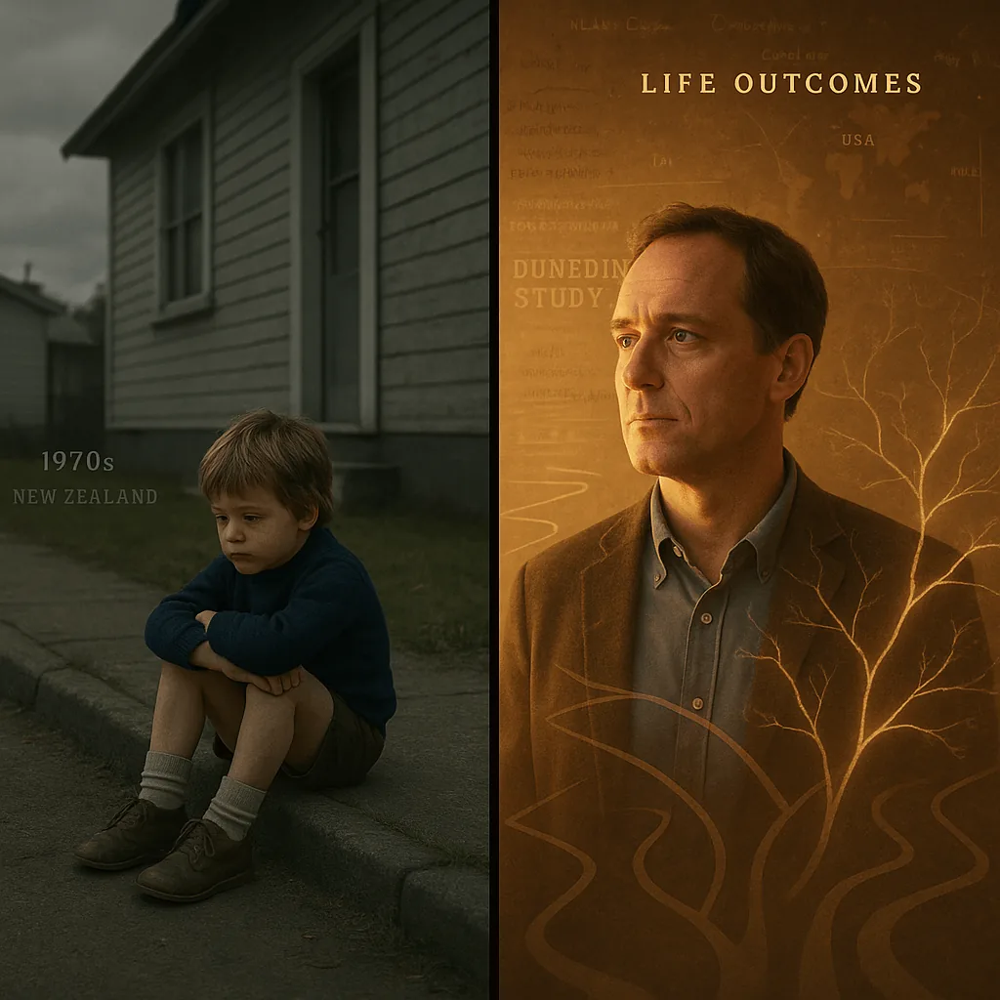

A current struggle tells you something is wrong. It does not tell you everything that brought a person here. We need to ask, and give people a reason to trust the answer will matter.
THE DUNEDIN STUDY
The Evidence
The Dunedin Study
A Thousand Lives. A Million Lessons
12 min read
// The Dunedin Study
What Follows a Child Into Adulthood?
What Is the Dunedin Study?
By the time someone arrives in treatment, there is already a history. What happened at home. What nobody noticed. What they learned to live with because there wasn't another option. The intake form catches the crisis. It rarely catches the whole life that came before it.
The Dunedin Study gives us something most research cannot: repeated assessments of the same people from childhood into midlife. Health, mental health, relationships, work, behaviour, and biology. Years of information collected before many of the adult problems had appeared.
It began with 1,037 children born in Dunedin, New Zealand, between April 1972 and March 1973. Researchers assessed them at age three and kept coming back across the decades. The study has now followed this cohort for more than fifty years. The trauma findings discussed here mostly examine adult outcomes through age 45. Study background.
- A birth cohort spanning a range of family circumstances.
- Repeated assessments of physical health, mental health, relationships, and everyday functioning.
- Childhood information from families, teachers, staff observations, and records, alongside some experiences reported later by participants.
- More than 90% of living study members retained at major follow-ups through midlife.
1,037
Children enrolled
1972–73
Born within one year
90%+
Retention, decades on
3
Age at first assessment
That retention matters. When people disappear from a study, their difficulties can disappear from the findings too. Keeping contact across decades gives researchers a much fuller account of what happened. It doesn't remove every limitation. It makes this an unusually valuable record of real lives.
And those lives show a pattern worth paying attention to. Childhood abuse and adversity were associated with difficulties that remained visible decades later. Mental illness. Inflammation. Relationship conflict. Financial trouble. Problems that crossed the boundaries our services use to divide people up.
We give someone a separate appointment for each part of their life that is falling apart. The research gives us a reason to ask how those parts connect.
For me, that is why this study belongs in the conversation about recovery. If we only ask what a person is doing now, we miss what they have been carrying. Then we call the answer incomplete when we never asked the whole question.
The evidence is there. What bothers me is how often a person's history still gets treated as background information. We keep asking people to recover while leaving that history outside the treatment room. To me, that is a failure we keep paying for.
90%+
Participant Retention across decades among living study members
26–45
Ages repeatedly assessed for adult outcomes in the childhood sexual abuse paper [Study]

// The Dunedin Study
Why It Matters
Childhood abuse is easy to file under something that happened a long time ago. The Dunedin findings make that much harder to defend. Researchers found associations with adult health and functioning even after accounting for other disadvantages. The history still mattered.
That does not explain every addiction or every illness. It does give us a serious reason to stop treating current behaviour as the entire problem. People arrive in recovery with bodies, relationships, bills, and years of experience. Care has to make room for that.
I don't need this study to prove every part of my own story. I need the people making decisions about care to take the evidence seriously. A person should not have to keep proving that what happened to them matters.
01Does the Evidence Extend Beyond Dunedin?
Yes, although different studies answer different questions. The original US ACE Study connected reported childhood abuse and household dysfunction with adult health risks. The UK E-Risk cohort also found an association between childhood victimisation and faster biological aging measured at 18 using DunedinPACE. ACE paper; DunedinPACE paper.
A separate study of roughly four million people in New Zealand and Denmark found that health, welfare, and justice-system burdens clustered in the same people. It supports looking across services, but does not establish that trauma caused that clustering. Read the study.
These findings add to the picture. They do not make one New Zealand cohort representative of every culture, or make poverty and social conditions irrelevant. The case for taking adversity seriously does not need a claim of universal proof.
We are shaped by our past. We are not sentenced by it.
A personal reflection
What the Trauma Research Actually Found
The papers below examine different exposures: sexual abuse, combined measures of maltreatment, and broader childhood adversity. Those distinctions matter. Each finding belongs to the experience the researchers measured.
1 The Difficulties Reached Across Adult Life
One of the most relevant Dunedin papers followed 937 people and examined outcomes repeatedly between ages 26 and 45. Participants who reported childhood sexual abuse had higher rates of psychiatric difficulties, suicide attempts, inflammation, poor oral health, sexually transmitted infections, relationship conflict, financial difficulties, and antisocial behaviour.
The associations remained after accounting for other childhood adversities, socioeconomic circumstances, and adult sexual assault. Most individual associations were small to moderate. The significance was their reach across adulthood and across multiple areas of life. Guiney et al., 2024.
That is what gets lost when we discuss abuse as an event with an end date. The event can end while the difficulties keep showing up in places nobody thinks to connect.
2 Earlier Maltreatment, Later PTSD
Among participants exposed to trauma in adulthood, those with severe childhood maltreatment had about 2.6 times the odds of developing PTSD compared with those with no maltreatment. The estimate was imprecise, but the association remained after researchers accounted for adolescent psychiatric disorders. Results for moderate maltreatment were inconclusive. Breslau et al., 2014.
The question here was what happened after another traumatic event. The person facing it already had a history. That belongs in how we understand their response.
3 The Body Was Part of the Story
Childhood maltreatment predicted elevated inflammation at age 32, including higher C-reactive protein, fibrinogen, and white blood cell count. The findings held up through several adjustments for other childhood risks, adult stress, and health behaviours. Danese et al., 2007.
A related study linked childhood maltreatment, social isolation, and socioeconomic disadvantage with a greater burden of depression, inflammation, and metabolic risk at 32. These were health risks, not proof that every participant would develop a particular disease. Different adversities made cumulative contributions. Danese et al., 2009.
Blood tests belong in this story too. Treating the history as irrelevant because the appointment is about physical health misses something the researchers could measure.
4 What the Brain Scans Showed
At age 45, participants with more childhood adversity tended to have smaller cortical surface area and thinner cortex. The associations were modest and were clearer for adversity documented during childhood than for adult recollections. Gehred et al., 2021.
The study did not have childhood brain scans, so it could not show that adversity made a particular person's brain shrink. Nor could a scan explain an individual's symptoms. The finding deserves attention without turning it into a verdict about a damaged brain.
5 Stress and the Pace of Aging
Childhood adversity, PTSD, perceived stress, and stressful life events each related to a faster biological pace of aging when examined separately. When researchers considered them together, perceived stress and stressful events retained independent associations. Bourassa et al., 2023.
This brings adult circumstances into the picture. What someone is living through now matters alongside what happened then. The study did not test whether trauma treatment slows aging. It gives us a reason to take the health implications of sustained stress seriously.
6 What Happens After Childhood Also Matters
Another Dunedin analysis linked childhood adversity with poorer health at 45. Adult stress and health behaviours helped account for that relationship statistically. Health behaviours were the most consistent link, including when health was assessed with biomarkers. Bourassa et al., 2023.
For me, this is an argument for care that reaches into daily life. Food, housing, safety, treatment, and practical support belong in a recovery conversation. Telling someone to make healthier choices means very little if we never ask what makes those choices possible.
Reading the Evidence Honestly
The Findings Are Serious. They Are Not a Sentence.
Dunedin is an observational study. It follows lives; it does not assign children to adversity or test a recovery programme. Following people over time and accounting for other risks strengthens the evidence, but cannot settle every question about cause.
Some adversity was documented during childhood. Some was reported later, including sexual abuse reported at 26. Childhood records can miss abuse, and adult recollections have limitations. Research comparing the two approaches found that both predicted adult outcomes, but they did not capture exactly the same experiences. Reuben et al., 2016.
These papers also draw repeatedly on the same cohort. They give us different views of those lives, not a fresh population every time. And the outcomes discussed here extend mainly into midlife, not through old age.
Most importantly, a group finding cannot tell you how your life will turn out. Researchers tested that directly: ACE scores predicted average differences between groups but performed poorly at identifying which individuals would develop later health problems. Baldwin et al., 2021.
Your history deserves to be taken seriously. It does not give anyone permission to write off your future.
Translating the Research
So, what does any of this actually mean for you?
Reading this research put words around something I had struggled to explain. I could see connections between what happened early and what I was trying to manage later. It gave me a way to look at my history without reducing the whole thing to weakness.
It mattered to find that experiences like mine were connected to difficulties people were still living with decades later. I had spent years trying to explain why the past still felt so present. Here was evidence worth bringing into that conversation.
I still had things to take responsibility for. Understanding my history gave me more to work with than another round of self-condemnation. It changed the questions I was asking, including what kind of help I needed.
This is what I take from the research into recovery:
Feeling broken is human. It is not a diagnosis of your worth. What you have been carrying deserves attention, even if nobody recognised it when you first needed help.
A study can describe increased risk. It cannot decide who you will become. You deserve support without having to prove that you will be one of the people who does well.
The fact that other people struggle does not make your pain smaller. It makes the need for accessible, informed care harder to dismiss.
The Dunedin Multidisciplinary Health and Development Study

A short introduction to the Dunedin Study, following health and development across more than fifty years.
// See It For Yourself
Watch: The Dunedin Study
This short introduction from the Dunedin research team gives you a direct look at the people behind the study, the methods that made it possible, and why its findings continue to matter.
If any of what you've read on this page has resonated, hearing it in the researchers' own words has a way of making it land differently.
Two Studies. A Shared Concern.
Where the Dunedin Study and the ACE Study Converge
Both studies connect childhood adversity with adult health and functioning. They reached that question through different methods. Neither was a trial of trauma treatment. Dunedin methods; original ACE paper.
Dunedin Study
- Repeated assessments from childhood into midlife
- Childhood records alongside later reports of abuse
- Links with mental and physical health
- Links with relationship and financial difficulties
- Biomarkers alongside interviews and records
- Findings describe risk, not individual destiny
ACE Study
- Adults reported childhood abuse and household dysfunction
- Higher ACE counts tracked with greater health risks
- Associations included mental and physical health
- Highlighted the cumulative burden of adversity
- Did not establish a specific brain mechanism
- Did not test whether awareness or treatment reverses risk
// The Power of Knowing
So What Do We Do With This?
For me, these findings make a demand of recovery services. Take the history seriously. Ask about it without making disclosure the price of getting help. Look at physical health, relationships, housing, and money alongside substance use. Stop expecting one narrow intervention to carry the weight of an entire life.
The research does not hand us a complete treatment plan. It gives us good reasons to question care that treats the past as irrelevant and every current difficulty as a separate failure.
Where ACEs gave me a way to name the accumulation, Dunedin gave me a view across time. I could see how a childhood history might still matter in a doctor's office, a relationship, or a recovery programme decades later. I had spent years judging myself without that context.
I was not doomed. I was explained.
That is what it felt like to me. The relief of finding language for something I had carried for years. The shame began to lose its grip. Not all at once. Not permanently. But enough to breathe. Enough to stop spending every bit of energy on self-condemnation.
Knowing more did not make recovery easy. It gave me a better place to begin. People deserve that chance without being blamed for the support they haven't had, or the things they are not ready to talk about.
My past set conditions I had to live with. It does not get the final word. And the systems asking people to recover have a responsibility to offer more than another instruction to try harder.
Where to Next?
Follow the next step in order, or branch out into related topics.
// Sources + Further Reading
- The Dunedin Multidisciplinary Health and Development Study. University of Otago. Study history, participant information, and publications. Read source
- Poulton, R., et al. (2015). The Dunedin Multidisciplinary Health and Development Study: overview of the first 40 years with an eye to the future. Social Psychiatry and Psychiatric Epidemiology. Cohort design, assessments, and retention. Read source
- Guiney, H., et al. (2024; first published online 2022). Childhood sexual abuse and pervasive problems across multiple life domains: Findings from a five-decade study. Development and Psychopathology. Abuse reported at 26 and outcomes repeatedly assessed from 26 to 45, with adjustment for other adversities. Read source
- Breslau, N., et al. (2014). Childhood maltreatment, juvenile disorders and adult post-traumatic stress disorder: A prospective investigation. Psychological Medicine. Childhood maltreatment and PTSD following adult trauma. Read source
- Danese, A., et al. (2007). Childhood maltreatment predicts adult inflammation in a life-course study. Proceedings of the National Academy of Sciences. Maltreatment and inflammatory markers at age 32. Read source
- Danese, A., et al. (2009). Adverse Childhood Experiences and Adult Risk Factors for Age-Related Disease: Depression, Inflammation, and Clustering of Metabolic Risk Markers. Archives of Pediatrics & Adolescent Medicine. Maltreatment, disadvantage, isolation, and adult health risks. Read source
- Gehred, M. Z., et al. (2021). Long-term Neural Embedding of Childhood Adversity in a Population-Representative Birth Cohort Followed for 5 Decades. Biological Psychiatry. Associations with brain structure at age 45; no childhood scans were available. Read source
- Bourassa, K. J., et al. (2023). Which types of stress are associated with accelerated biological aging? Comparing perceived stress, stressful life events, childhood adversity, and posttraumatic stress disorder. Psychosomatic Medicine. Comparison of stress measures and biological aging. Read source
- Bourassa, K. J., et al. (2023; first published online 2022). Childhood Adversity and Midlife Health: Shining a Light on the Black Box of Psychosocial Mechanisms. Prevention Science. Statistical pathways connecting childhood adversity with health at 45. Read source
- Reuben, A., et al. (2016). Lest we forget: comparing retrospective and prospective assessments of adverse childhood experiences in the prediction of adult health. Journal of Child Psychology and Psychiatry. Comparison of childhood records and adult recollections. Read source
- Baldwin, J. R., et al. (2021). Population vs Individual Prediction of Poor Health From Results of Adverse Childhood Experiences Screening. JAMA Pediatrics. Group associations versus limited individual prediction in Dunedin and E-Risk. Read source
- Belsky, D. W., et al. (2022). DunedinPACE, a DNA methylation biomarker of the pace of aging. eLife. A biomarker developed using Dunedin data. The childhood-victimisation validation discussed above involved the separate UK E-Risk cohort at age 18. Read source
- Richmond-Rakerd, L. S., et al. (2020). Clustering of health, crime and social-welfare inequality in 4 million citizens from two nations. Nature Human Behaviour. Administrative-record findings from New Zealand and Denmark, with Dunedin data used to examine earlier characteristics. A study of clustering, not proof of trauma causation. Read source
- Felitti, V. J., et al. (1998). Relationship of childhood abuse and household dysfunction to many of the leading causes of death in adults. American Journal of Preventive Medicine. The original US ACE Study, included for comparison with Dunedin. Read source
Research claims above link to the relevant papers. Personal reflections describe what I took from the evidence. This page is for education, not individual diagnosis or treatment advice.
Feeling overwhelmed by what you’ve read? Support is here • Call 988 anywhere in Canada, 24/7 Suicide Crisis Line • In Alberta call 211 for community & mental health referrals • Distress Line 780-482-HELP • 911 in emergencies •